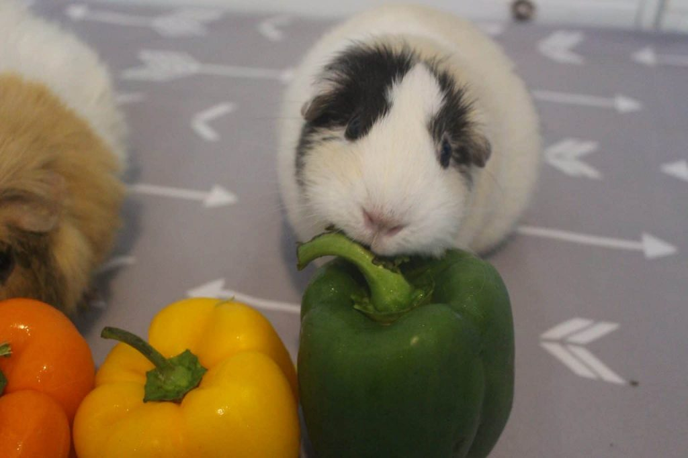

A Guinea Pig's digestive system is designed to be a 24/7 hay-processing machine. At PurrPets, we ensure your "cavy" gets the perfect balance of fiber and vitamins.

| Food Group | Importance | The PurrPets Recommendation |
|---|---|---|
| Timothy Hay | 80% of Diet | Unlimited access. Keeps teeth worn down and gut moving. |
| Fresh Veggies | 1 Cup Daily | Romaine lettuce, Bell peppers (C!), and Cucumber. |
| Pellets | 1/8 Cup Daily | High-quality, Timothy-based pellets fortified with Vit C. |
| Fresh Water | Essential | Large drip bottle or heavy bowl (changed daily). |
Humans, monkeys, and Guinea Pigs are among the few mammals that cannot produce Vitamin C. Without it, they can develop Scurvy. At PurrPets, we recommend fresh bell peppers over water-drops, as the vitamin degrades quickly in light!
Don't be alarmed! Guinea pigs, like rabbits, produce a special kind of "soft" poop that they eat directly to re-absorb B-vitamins and healthy bacteria. It’s gross to us, but it’s vital health food for them!